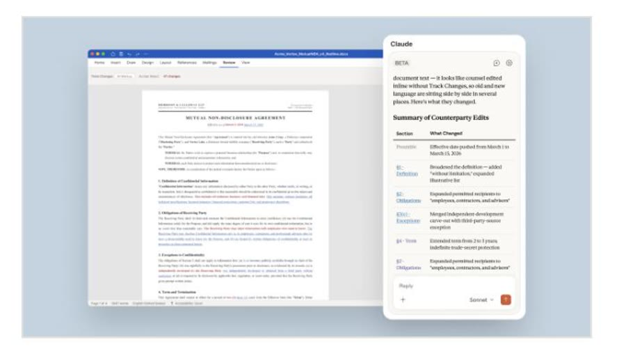

Anthropic 공식 영상(2026년 8월 26일)과 공식 문서를 그대로 옮겼습니다. 제가 워드에서 직접 써본 화면은 아직 없습니다.

AppSource 공식 스크린샷. 워드 오른쪽 패널에서 대화로 시킵니다.
| 공식 영상 장면 | 시킨 말(영상 그대로) | 결과 |
|---|---|---|
| 댓글 정리 | "Summarize the open comments in this document. Who's asking for what and do any of them conflict?" | 6개 댓글을 4명별로 묶고 충돌 1건 표시 |
| 변경 내용 추적 | "Turn on track changes and keep it on for everything you do." | 이후 모든 수정이 빨간 줄(승인/거부는 내가) |
| 팩트체크 | "Check Box for the results doc and compare every claim. Fix any that don't match." | 원본 문서와 대조해 틀린 수치만 수정 카드로 |
| 분량 | "We need to get this under a thousand words, but don't cut more than you need to. Don't touch the customer quote." | 화면 표시 ~996 words |
| 교정 | 패널에 / → copy-edit 스킬 | 오타·중복어·문장부호 한 번에 |
출처: Claude for Word: Turn a draft into a finished document(@claude) · Use Claude for Word(공식 문서).
공식 문서 표기: Pro, Max, Team, Enterprise 플랜에 포함. AppSource 의 "Additional purchase may be required"는 유료 클로드 플랜이 필요하다는 뜻입니다.
1. 변경 내용 추적을 켜고, 이 문서에서 하는 모든 작업에 유지해줘. 2. 이 문서의 열린 댓글을 요약해줘. 누가 무엇을 원하는지, 서로 충돌하는 건 없는지. 3. 이 문서의 수치 주장을 첨부한 원본 자료와 대조해서, 안 맞는 것만 고쳐줘. 4. 1,000단어 아래로 줄여줘. 필요한 만큼만 자르고, 인용문과 날짜는 건드리지 마. 5. /copy-edit (오타·중복어·문장부호 한 번에)